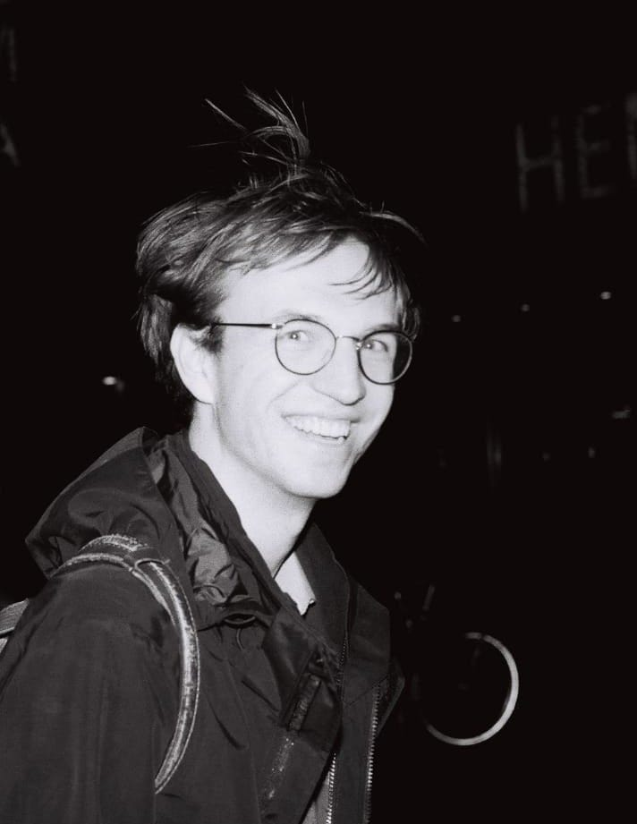

Tanguy Heesemans
Twitter: @Tan_Heesemans>
Master's student Molecular Life Sciences at Wageningen University.
I do science. I like poetic prose, melancholic movies and emotional landscapes.
I have just started my thesis in the Green Mechanobiology group of Joris Sprakel. Together with him and my supervisor Cecilia Borassi we will investigate the molecular mechanisms underlying plant's perception of touch.
Previously I obtained my bachelors degree in Molecular Life Sciences at Wageningen University. My bachelor thesis, Chasing Biological Catch Bonds; Development of a Microfluidics Rolling-Adhesion for the Detection of Biological Catch Bonds, was supervised by Annemarie Bok, Martijn van Galen and Joris Sprakel.